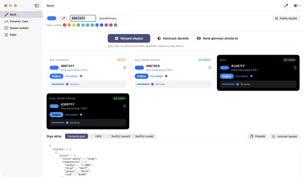
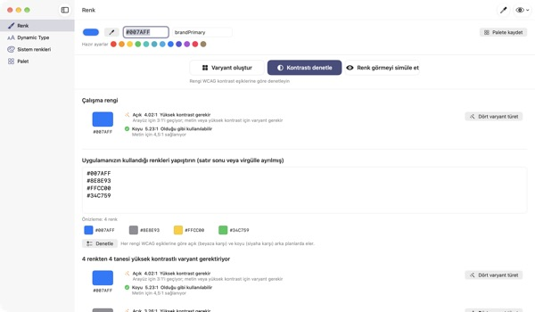
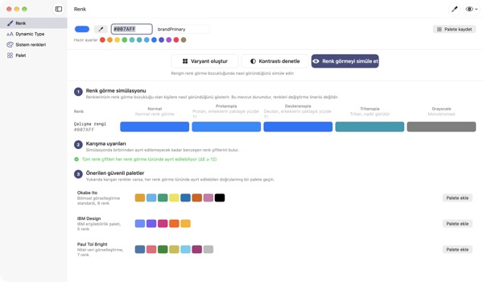
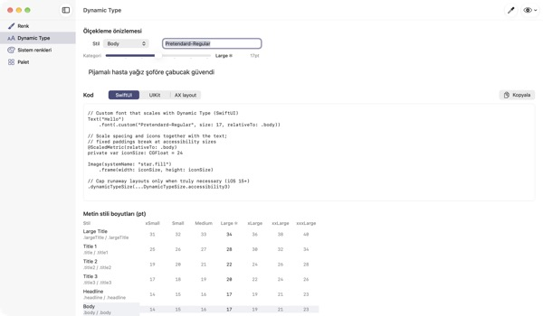

Tek renk girer,
dört görünüm çıkar
Sistem renkleri koyu moda ve Kontrastı Artır ayarına kendiliğinden uyar. Marka renkleriniz uymaz. TetraTint açık moddaki tek bir renkten Açık, Açık yüksek kontrast, Koyu ve Koyu yüksek kontrast varyantlarını üretir ve doğrudan Xcode’a aktarır.
Tüm özellikler ücretsiz. macOS 14 veya üstü gerekir.

Marka renginizi deneyin
Bir hex değeri yapıştırın ya da hazır ayarlardan birine dokunun. Uygulamadakiyle aynı hesapla dört varyant ve kontrastları anında çıkar.
Marka renginiz koyu modda kayboldu mu hiç?
Açık modda seçtiğiniz mavi siyah üzerinde bulanık görünür, Kontrastı Artır açık olanlar da metni zor okur. Her görünüm için renk arayıp kontrastı elle hesaplamak yarım gününüzü alır. TetraTint varyantları sistem renklerinin görünümler arasında değiştiği şekilde türetir ve her birinin geçip geçmediğini hemen gösterir.
Kullandığınız tüm renkleri tek seferde denetleyin
Uygulamanızdaki hex listesinin tamamını yapıştırın; her renk değerlendirilir: olduğu gibi kullanılabilir, yüksek kontrast gerekir ya da yalnızca dekoratif.
Sorunlu bir renk tek tıkla dört varyanta dönüşüp paletinize kaydedilir. App Store’daki Yeterli Kontrast erişilebilirlik etiketine hazırlanırken de işe yarar.

Renk körü birinin gözünden bakın
Paletinizi protanopi, döteranopi, tritanopi ve gri tonlamayla görün; ayırt edilmesi zorlaşan çiftler için uyarı alın.
Renk körlüğüne uygun Okabe–Ito, IBM ve Paul Tol paletlerini tek tıkla yükleyin ya da sağ üstteki göz düğmesiyle tüm uygulamayı bu şekilde görün.

Özel yazı tipleri de metin boyutunu izler
11 metin stilini 7 boyutta görün, kaydırıcıyı sürükleyerek gerçek boyutları önizleyin.
Yazı tipinin PostScript adını girin; UIKit, SwiftUI ve @ScaledMetric kodunun yanında büyük metinde düzeni değiştiren kodu da alın.

Üç adımda başlayın
- 1
Temel rengi girin
Bir hex yapıştırın, damlalıkla ekranın herhangi bir yerinden renk alın ya da hazır ayar seçin.
- 2
Dört varyantı kontrol edin
Kontrast rozetlerine bakın, markaya uymayan varyantları renk seçiciyle düzeltin.
- 3
Xcode’a aktarın
Contents.json, .colorset ya da UIKit ve SwiftUI kodu olarak kopyalayın veya kaydedin.
Varyantlar nasıl üretilir, rozetler ne anlama gelir
- Açık (varsayılan)
- Girdiğiniz renk olduğu gibi
- Açık, yüksek kontrast
- Biraz daha doygun, beyaz üzerinde 4.5:1 olana dek koyulaştırılır
- Koyu
- Biraz daha açık ve canlı (açıklık +5, doygunluk +3)
- Koyu, yüksek kontrast
- Siyah üzerinde 7:1 olana dek açılır
- AA metin
- Arka plana karşı en az 4.5:1, metin için uygun
- UI 3:1
- En az 3:1, düğme ve simgeler için yeterli ama metin için değil
- Düşük
- 3:1’in altında, metin, simge ya da durum göstergesinde kullanmayın
- Dışa aktarma
- Contents.json · .colorset · UIKit · SwiftUI ya da tüm palet tek bir .xcassets
Sistem renklerinin referans değerleri Apple’ın Human Interface Guidelines belgesinden alınmıştır ve sistem güncellemeleriyle değişebilir. Yayımladığınız uygulamada sistem renk API’lerini kullanın.
Sık sorulan sorular
Gerçekten ücretsiz mi?
Evet. Tüm özellikler ücretsiz; hesap da reklam da yok. İşinize yaradıysa Ayarlar’dan bahşiş bırakabilirsiniz; bahşiş hiçbir özelliğin kilidini açmaz.
Üretilen varyantlar markamıza uymuyor.
Her varyantı kartındaki renk seçiciyle ayarlayın. Tümünü yeniden oluştur, elle yaptığınız değişiklikleri atıp her şeyi temel renkten yeniden türetir.
Varyantlar nasıl hesaplanıyor?
Apple sistem renklerinin görünümler arasında gerçekte nasıl değiştiğini izler: koyuda biraz daha açık ve canlı, açık yüksek kontrastta beyaz üzerinde en az 4.5:1, koyu yüksek kontrastta siyah üzerinde en az 7:1.
Renk görme simülasyonundaki uyarı ne demek?
O simülasyonda iki renk arasındaki farkın (ΔE) 12’nin altına düştüğü ve ayırt etmenin zorlaştığı anlamına gelir. Yalnızca renge güvenmeyin: simge, desen veya etiket ekleyin ya da güvenli bir palete geçin.
Özel yazı tipime Dynamic Type desteği nasıl eklerim?
Dynamic Type bölümünde yazı tipinin PostScript adını girip bir stil seçin; UIKit, SwiftUI ve @ScaledMetric kodu oluşur. Erişilebilirlik boyutlarında Body varsayılanın üç katından fazla büyür, bu yüzden sabit yükseklik ve lineLimit(1) kullanmayın.
Dışa aktarılan renkler uygulamamdaki sistem renklerinden farklı görünüyor.
Referans değerler Human Interface Guidelines belgesinden gelir ve sistem sürümleri arasında değişebilir. Sistem renkleri için her zaman UIColor veya Color API’sini kullanın.
Paletim nerede saklanıyor?
Yalnızca Mac’inizde. Hiçbir şey buluta eşzamanlanmaz ya da bir yere gönderilmez. Ayrıntılar için gizlilik politikasına bakın.
Damlalıkla aldığım renk kaydediliyor mu?
Hayır. Yalnızca seçtiğiniz noktadaki renk değeri okunur ve çalışma rengi olarak kullanılır. Ekran görüntüsü kaydedilmez ya da gönderilmez.
Hangi Mac’lerde çalışır?
macOS 14 (Sonoma) veya üstünde. Dışa aktarırken dosyaların nereye kaydedileceğini siz seçersiniz.
Hata bildirimi, özellik önerisi ya da soru için leeo@kakao.com adresine yazın. Genellikle 2–3 gün içinde yanıt veririz.